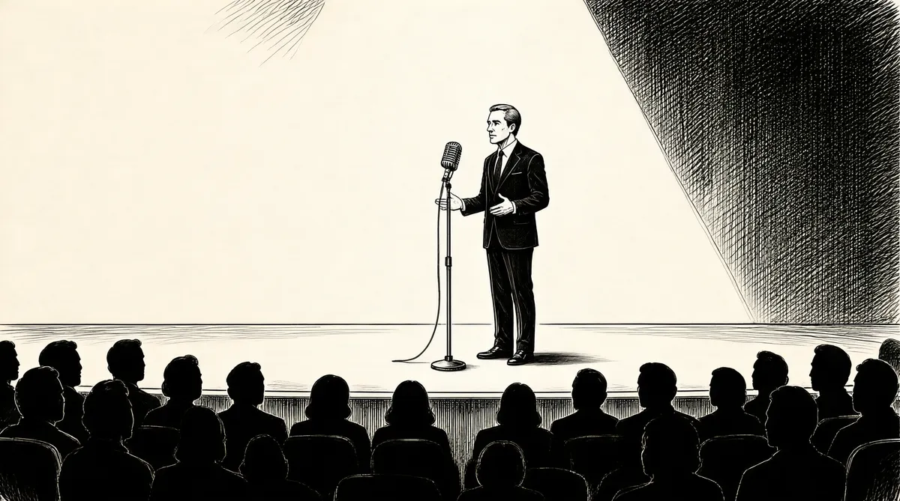

第40章 如何避免经营一家公共图书馆

1975年年初的一天，苏珊·巴菲特的朋友尤妮斯·丹尼伯格来家中拜访，她刚在客厅沾满狗毛的沙发上坐定，苏珊就转过脸去，背对着她，然后她打开了录音机，开始唱起歌来。丹尼伯格听后大加赞赏。她们谈起了苏珊希望登台演唱的梦想，但是她实在是太胆怯了，一直都不敢去尝试。丹尼伯格回到家后，第二天就给她打电话，说，“我做你的经纪人”。她找到了鲍勃·埃德森——米兰德学院音乐专业的副教授——请他为苏珊组建了一支伴奏乐队，并特邀苏珊在“蒸汽动力”夜总会登台演出，这是位于奥马哈城郊区的一个叫欧文顿的小镇，正是在这里，她和多蒂曾经在她父亲的教堂中组建了一个唱诗班。苏珊的心中忐忑不安，不过家里其他人都对此满怀热情，只有汤普森博士充满了疑虑，他说：“我不知道你为什么想在夜总会里唱歌。”
苏珊第一次公开登台演出的那个晚上，面前的观众全都是她的朋友，大概有35人。她太紧张了，因此她要求沃伦不要去看。她穿着缀满了金属片的长裙，同人们交谈和打招呼，快要登台时她呆呆地站在那里，直到丹尼伯格一把将她推上舞台。从艾瑞莎·富兰克林的《打电话给我》，到辛纳特拉的《你使我感觉如此年轻》，到血汗泪合唱团的《你使我如此快乐》，再到她最为喜欢的歌手之一——罗伯塔·弗兰克的《我第一次看见你的脸》，她选择的音乐都是充满深情、激情和浪漫的。苏珊发现观众的反响十分强烈，他们对她报以热烈的掌声。1这和她在私人场合为朋友唱歌时得到的反响相似，人们都对她的歌声大加赞赏。这是她的特别天赋，现在经过提炼得以发挥。从这一刻起，她想成为歌厅的一名驻唱歌手。
然而，几周后的一天，苏珊正在为下一次前往加州卡梅尔的演出进行彩排，突然她的妯娌伯蒂打来电话，请她去帮帮她的小女儿莎莉，莎莉正在遭受脑瘤的折磨，不久于人世。与此同时，伯蒂同查理·斯诺福的婚姻正在破裂。
莎莉死后，伯蒂发现这一悲剧融化了她冰冻的情感。“莎莉真是个好孩子，而且有非凡的感受力，作为一个7岁的孩子，她有超出年龄的深刻洞察力和极为丰富的感情，”伯蒂说，“有一次，她对我说，妈妈，你和爸爸都会孤独的。我想，当你最亲近的人死时，他们会给你遗嘱的。莎莉死时，她给我的遗嘱是我不应该再拒绝自己的感情了。她的话就像一根铜线直通我的心脏，从那时起，我再也不能掩饰自己的感情了。”
伯蒂同苏珊的关系一直很特别，莎莉死后，她也打开了心扉，突然之间，她们的关系更加亲密了。“苏珊是我一直喜爱的人，她对我非常重要，”伯蒂说，“她是我的家人中唯一一个可以让我敞开心扉倾诉感情的人。”
然而，她的弟弟对于侄女的死却有截然不同的反应。他给一些曾经到拉古纳拜访过巴菲特夫妇的朋友打电话，告诉他们关于莎莉的事。“我们非常震惊，因为一两周前，我们还在一起，”玛丽·霍兰德说，“我问他发生什么了，他说，‘我说不下去了。’然后就挂断了电话。”
当时，沃伦用繁忙的工作来驱赶心中的悲痛。美国证券交易委员会对他的调查刚刚结束。他被凯瑟琳·格雷厄姆强烈地吸引着，甚至到了痴迷的地步。当沃伦迷上什么，尤其是一个陌生人时，他的心中会一直惦记着他或者她；这一次是一个全新的人，他付出了全心全意的、有些阿谀奉承甚至是压倒一切的关注。然而，在谈及生意时，他在一瞬间就恢复了原状，把强烈的感情埋在了心底。正如芒格所说的，巴菲特“永远不会让他所痴迷的小人物干扰了大事业”。2不过，凯瑟琳·格雷厄姆并不是个小人物。早先的某个时候，他决定要看看，当她偶然遇见芒格——他所认识的最聪明的家伙时——会与他擦出什么火花来。“凯瑟琳很友好，如果我给她一些事情去做时，她会非常尽职尽责。如果我告诉她去读一些十分复杂的财务报表，或者无论什么东西，她都会尽力按照我的指示去做。我告诉她，‘你必须见见查理。’我不断地对她说。最后，她来到了洛杉矶，去见查理。”
她来到查理那间破旧不堪的办公室里，刚一坐下就立即取出一个黄色的便笺簿，以便他在讲话时，好做记录。查理满心欢喜——他在想他所说的一切都很重要吗，要不这个世界上最有权力的女人怎么还要把他所讲的话记下来呢。
查理无法抗拒这种鼓励，于是不自觉地炫耀了起来。他之前和格雷厄姆联系过，给她写过信：“你把我带回到了30多年前，使我像汤姆·索亚对贝基·撒切尔一样，并且我猜想对于我们俩来说，沃伦真是个大傻子。”3
然而，不论凯瑟琳会使沃伦多么眼花缭乱，晕头转向，他都在用一种严肃的方式把她送进商业学校。“凯瑟琳不断地让我私下里给她解释这些财务报表。我会带着这些年度报告到华盛顿。然后她会说，‘哦，沃伦，上课。’就这样，又开始讲课了。”他认为她的儿子唐“极其聪明”，具有“几乎像照相机一样的记忆力，这一点比我遇到的任何人都要强”。为了使这个家庭感觉放心，沃伦签署了一份代理投票协议，请唐代表他行使投票权。现在，当他来华盛顿参加长达数月的董事会议时，他就住在凯瑟琳的家里。她不赞同他的穿着方式。“不过我告诉她，‘我要同唐的衣着一样，’”巴菲特说，“在这一点上他和我结成了统一战线。”
巴菲特对凯瑟琳的感觉是：“她非常非常聪明，在许多方面都很明智，只要你不去碰那些伤疤就行了。不过她很善解人意。”随着他们的关系更加密切，他感觉可以对她在董事会的发言方式进行指点了。他知道这并没有她想象的那么艰难。一天，他把她叫到一边说：“你不能向董事会任何成员乞求帮助，这与你的职位不符。”听了他的话后，她就不再向任何人请求帮助了。
格雷厄姆和巴菲特之间的关系，无论从生意角度还是私人角度都已经达到了十分亲密的程度，因此沃伦邀请凯瑟琳和唐参加本杰明·格雷厄姆集团于1975年在希尔顿海德岛举行的年会。在会议上，唐表现得十分谦逊，立即给其他人留下了很好的印象，同时也使他从中获益匪浅。许多人一眼就看到，凯瑟琳放下了自己的冷漠和高贵，表现出脆弱和谦恭，这使得沃伦无法不去喜欢她。因此尽管她好像女王一样威严庄重，但是她很快就和大部分人打成了一片，融入了这个团体之中。她真诚地想和每个人建立良好的关系——尽管在她内心深处一直认为男人远远比女人优秀，并且在这次会议上她依然这么认为。格雷厄姆就像男人堆里的一个标志，她衣着华丽，发型高贵，手中拿着鸡尾酒，款款地在他们中间坐下；有人发表政见，她会回应说“亨利是这样认为的”——她指的是基辛格博士。这不可能不给人留下深刻的印象。
苏珊·巴菲特在希尔顿海德岛的年会上首次为这一集团献歌。比尔·鲁安带来了一张表，上面显示着黄金价格已经连续5年超过了伯克希尔–哈撒韦的股价。他开玩笑地问其他人，是否应该购买金属了。但最终事实证明，他实际上已经买到了“金币”，并且用它赚了个盆满钵满。4
亨利·勃兰特把巴菲特拉到隔壁一个房间，要他保证伯克希尔–哈撒韦的股票不会跌到40美元以下。到1975年10月，股票价格已经从两年前的93美元被拦腰折断了。“瞧，我爱你，”巴菲特回忆当时的情形，“但是我不能向你保证。”“我要崩溃了，”勃兰特说，“我把每一分钱都投到了这只股票上。”
世界继续崩溃，即使其他地方的股票市场已经开始复苏，伯克希尔还没有。勃兰特惊慌失措，立即给巴菲特打电话，而巴菲特只愿意出40美元一股。接着勃兰特又给沃尔特·施洛斯打电话说：“沃伦只愿意出40美元，而我想要50美元，我该怎么办呢？”
施洛斯是“烟蒂”型股票的坚定支持者。在格雷厄姆集团的年会上，其他人都对他的“马鞭型”投资组合大加嘲讽和非难，这种组合囊括了破产的钢铁公司和窘迫的汽车零配件制造商。“那又怎样？”施洛斯说。“我不喜欢压力，并且我晚上睡得很好。”他填好简单的清单，把格雷厄姆的投资哲学运用在了这张最简单的表格中，然后在每天下午5点钟，他准时离开特威迪·布朗公司的办公室，然而他的成就却十分了得。
现在，施洛斯听勃兰特这么说感觉十分惊愕，他竟然要把伯克希尔的股票卖掉脱身，这完全同“烟蒂哲学”相左。施洛斯对他劝说了两个小时：“你把钱给了世界上最聪明的家伙，让他来给你管理，事实上，沃伦根本没有向你收任何手续费，你现在却要卖掉，真是个大错误啊。”“我想我信任他。”施洛斯说。但是，在那时，美国的经济仍然麻烦不断，纽约几乎要破产了；整个国家都沉浸在极度的悲观之中，这种局势影响了每个人的判断。“在星期一，他给经纪人打电话，”施洛斯说，“开始出售——他妻子的股份，而不是他自己的——直到卖出他们一半的股份。”5
之后不久，福特总统拒绝对纽约的经济实施政府救援；《纽约每日新闻报》的一篇文章记录了这一时代的情绪，它用巨幅标题“福特说：去死吧！”表达了失望之情。6
在1970年以大概40美元一股买进伯克希尔股票的那些合伙人们，似乎在5年后并没有富裕起来。“对任何持有我们股票的人，”芒格说，“看起来好像是很长时间都没有收到什么利好消息了。总的来说，这不是我们的合伙人以前所经历过的。纸上的记录看起来真是糟糕，然而在未来，也许你称为“内部记分卡”的东西，也就是真正的业务势头，却一直在增加。”
巴菲特基于这些股票交易的资本净值也同他当初结束合伙公司时差不多。然而，尽管财富明显地减少了——这几乎会让其他任何人恐惧不已——然而他的心中仍然保持着镇静，没有一丝的不安和忧虑。1974年美国证券交易委员会开始调查之前，伯克希尔拥有蓝筹印花公司26%的股份。尽管在1975年的欧姆尼航空事件中，巴菲特放慢了对伯克希尔的收购活动，但是通过多元零售公司，他还是在不断购买伯克希尔的股票。到1976年时，他通过多元零售公司同时在购买伯克希尔和蓝筹印花公司的股票。归根结底，伯克希尔在蓝筹印花公司拥有的股份超过了41%——而通过伯克希尔–哈撒韦，他和苏珊直接拥有的份额也高达37%。
由于伯克希尔的股票在1976年很便宜，他想到了用另一种方式来利用这一时机，他说服他的母亲——“因为她对金钱根本不关心”——把她所拥有的伯克希尔的5272股卖给多丽丝和伯蒂。用5440美元现金，外加一张10万美元的支票，他们每个人得到了伯克希尔2636股——相当于每股只付了两美元现金。7尽管巴菲特几乎把债务看成是罪孽深重的，但是他认为伯克希尔40美元一股的价格真是太便宜了，因此他希望让他的姐妹们借钱，临时以95%的价格购买该股票。他很明显地认为股票的价格将会增长，并且按这个条件购买会让他的姐妹们变得富有，8同时也可以避免缴纳大量的遗产税。
这是我母亲一直想做的，直到那时才是最好的时机。那恐怕也是空前绝后的最伟大的一着了，再也不会发生了，那真是一个千载难逢的好机会。
到处都在贱卖价值不菲的东西。大概与此同时，汤姆·墨菲来找沃伦，带来了一个好消息，有家电视台要出售。巴菲特认识到这是一宗极好的交易，但是他却不能买，因为这同《华盛顿邮报》公司冲突，因为该公司已经拥有了几家电视台。而由于他是《华盛顿邮报》的董事，如果他买进这家电视台的话，就会使《华盛顿邮报》违反美国联邦通信委员会的规定。9“怎么样我才能参与进去，同时我又不用拥有它呢？”他问自己。他实际上必须考虑这个问题，然后找到解决的方法。突然他想起来他并没有拥有格林奈尔学院。他们看的第一家电视台已经卖出去了，但是在巴菲特的推荐下，格林奈尔学院购买了俄亥俄州代顿的一家电视台，价格为1300万美元，先付200万美元，其余的部分，桑迪·戈特斯曼采用负债融资的方式支付。把电视台卖给格林奈尔学院的经纪人称，这是他在过去20年中所经历的最佳交易。10
股票价格这么便宜，像纽约这样的城市几近破产，这是有充分的理由的。通货膨胀肆虐，人工成本失去控制，劳动关系不稳定，全都抑制了经济的发展。报业是受到影响最为严重的行业。在希尔顿海德岛年会之后不久，1975年10月1日凌晨4点，《华盛顿邮报》的工会合同到期，《华盛顿邮报》的一些印刷工人砸毁灭火器，倒出油墨，弄掉齿轮，扯下电线，使机器无法印制报纸。他们扯下成卷的新闻纸，到处放火，并且打伤了一个印刷车间领班的头部，鲜血汩汩地直往外冒。11格雷厄姆在一个小时内就来到了一座大楼下，她看到，在电视台摄像机的灯光下，消防车、警察以及好几百名纠察员们正在忙着救火。
《华盛顿邮报》同几个工会的关系“像个醉汉一样完全失控了”，唐·格雷厄姆回忆说。12这些激进的工人们认为他们“无法熟练”操纵这些机器，“然而他们却有能力找到替罪羊来解决所有的问题，这就是更为明确地反对新的管理方式”。凯瑟琳后来写道。13在进行了多年的破坏活动和消极怠工之后，9个工会的合同马上就要到期了，在紧张和沮丧的氛围中，资方的谈判人员同工人之间的僵持继续扩大。
除印刷工人外，多数的工会工人都在坚持工作，尤其是新闻记者报业工会。《华盛顿邮报》的直升机越过罢工者的纠察线，把一些主要的工作人员转运到借来的印刷厂，在被迫停刊一天后，就重新印刷出版了。但是，随着罢工的持续，格雷厄姆十分害怕报纸就此停刊，那些没有参加罢工的管理人员和工人的力量很薄弱，以至于报纸的版面只有原来的1/4，而印量只有一半，广告客户不断流失，全都跑到了《华盛顿邮报》的主要竞争对手——《华盛顿明星晚报》那里。几天之内，《华盛顿明星晚报》就“登满了大量的广告，报纸重得都快拿不动了”。14
他们打电话叫我回去，因为他们很害怕凯瑟林会崩溃。我们一起穿过示威者的纠察线，凯瑟琳这么做很勇敢，但是当她看到《华盛顿明星晚报》时，我看见她眼中满含泪水。《华盛顿明星晚报》正在竭尽全力把《华盛顿邮报》挤出市场，他们模仿《华盛顿邮报》的版式，雇用《华盛顿邮报》的人员。她会在半夜醒来，给我打电话。
当她感觉受到威胁时，这个被编辑霍华德·西蒙称为“坏凯瑟琳”的女人，就会陷入癫狂状态。
凯瑟琳真的并不坏，她只是没有安全感。如果她感觉很不安全，她就会发出相当刺耳的声音。有时候，有些事情会让她放声痛哭，接着她会像动物一样做出疯狂的反应。她似乎感觉没有人和她一心，她被逼到了角落里，她不知道接下来该怎么做。到了这时候他们就会打电话叫我来。菲利普不和她一心，她的母亲也不和她一心，公司的管理人员有时也不和她一心。并且，在她内心深处总有一种感觉，认为她的周围是一个不友好的环境，任何小事都可能激发混乱。
但是，她一直都知道我和她是一心的，当然这并不意味着我在任何事情上都认同她，或者她想让我吃什么我就吃什么。但是我是支持她的，并且永远会支持她。
这位“坏凯瑟琳”在有些地方同利拉·巴菲特很像。能够成为凯瑟琳唯一信任的人，并且能够不让“坏凯瑟琳”现身，沃伦的自豪之情油然而生。
现在巴菲特已经具有明确洞察人们动机的能力，因此他知道是什么原因驱使人们围在格雷厄姆的身边，除此以外，他能帮她培养洞察力。这是苏珊教会他的，现在他也可以把这些洞察力传授给其他人。他对人们的反应洞察得很敏锐，可以帮助那些感觉受到威胁的人，让他们分清哪些人真的具有威胁性，而哪些人的行为只是出于恐惧。
“她认为沃伦是在水上行走——而他也确实是这样，”董事会的成员阿贾伊·米勒说：“沃伦很坦率，并且她很信任他。”对于合适的人，巴菲特会逐渐向其灌输一种能力，就是从各方面客观公正地看待问题的能力，这也是苏珊教给他的。这种令人不可思议的自信和安全的天赋可以内化到人的心灵深处，因而在学会之后人们不用依赖他仍然可以使用这种能力。但是凯瑟琳太没有安全感了。“我认为他不可能真的让她做到那一步，”米勒说，“但如果有人能做到，那就只有他了。”她需要他亲自到场。
在接下来的6个月里，《华盛顿邮报》继续出版，而毫无结果的谈判仍然在进行着，威胁、暴力、一系列的心理战、不断的斗争，他们要博取已经分裂的报业协会的同情而使其不参加罢工。人们采用各种各样的手段来保证报纸的印刷出版；唐·格雷厄姆现在成了一个给机器装纸的工人，他把巨大而又沉重的纸卷一卷一卷推到印刷机上。
有些人包括一些她最为尊敬的人，都对她说：“你必须放弃，否则你会输得一干二净。”他们很害怕，他们不希望没有报纸可出版，不愿意看到《华盛顿明星晚报》把《华盛顿邮报》给挤垮了。
因此，我就是与他们对抗的力量。我对她说：“我会告诉你怎么做，我会努力使事态不发生转折。”这个转折指的是某个人夺取了控制权，并且在你回去之后，他仍然能够控制局面。这包括5个变量：当你回去后员工的态度、你给这群人所留下的印象、那些转向其他报纸的广告、其效果的好坏、你要评估人们改变阅读习惯的可能性。他们并没有把我们的专栏作家或者漫画家挖走，因此，问题就是，在什么地方出了问题，导致他们改变习惯而去购买其他的报纸？
那恐怕是对她最为重要的了。她相信我，并且她一直相信我。我把她的全部利益都放在了心中，并且她相信我非常精通报业。
但是，“尽管沃伦在鼓励她，但是是她自己的毅力和志气——而不是他的——一直在支撑着她”。乔治·吉莱斯皮强调道。15
她的毅力和志气要足够强大以支撑整个公司。除了印刷工人外，《华盛顿邮报》其他的雇员几乎都在坚持工作，他们要冒着被袭击的威胁，不断穿过罢工工人的纠察线前来工作。他们的汽车轮胎常常被扎破，他们的家人常常在家中接到恐吓电话。一位罢工的工人举着一张标语，上面写着“菲利普射死了邪恶的格雷厄姆”。为了鼓舞士气，格雷厄姆、巴菲特和梅格·格林菲尔德在邮件收发室包装报纸。巴菲特很喜欢这份工作，他再一次重温了分发报纸的乐趣。
罢工持续两个月后，《华盛顿邮报》向印刷工人做出了最后的让步，但是遭到了他们的拒绝。16罢工继续进行，双方没有达成任何解决方案。格雷厄姆开始雇用新工人来替代他们，以瓦解罢工。印刷工人们继续在工厂门口示威，他们认为还有谈判的机会。但是在接下来的几个月里，报纸逐渐赢得了其余工会、读者和广告商的支持，不过示威活动一直持续到了春天，而广告收入也一直没有恢复到原来的水平。
正当格雷厄姆在慢慢拯救她的公司时，17巴菲特和芒格也最终同美国证券交易委员会达成了和解。此刻，巴菲特邀请芒格到畜牧场附近的约翰尼餐馆吃牛排，同时商讨他们的“精简”计划。他已经决定停止为FMC公司管理资金。接着，蓝筹印花公司要把它在原始资本基金的股权卖掉，18并且伯克希尔和多元零售公司要重启合并计划，之前的计划在1975年年初由于美国证券交易委员会的调查而中断。在贝蒂·彼得斯的请求下，蓝筹印花公司只购买了韦斯科金融公司80%的股份，现在仍将作为上市公司而存在，芒格仍然是它的董事长。芒格和巴菲特推迟了把蓝筹印花公司并入伯克希尔–哈撒韦的时间，决定等到他们能够很容易对这些公司的相对价值达成一致时再合并。
伴随着伯克希尔和曾经占用了他长时间注意力的、正在从动乱中复兴的《华盛顿邮报》的发展，巴菲特的日常业务开始正规化。《华盛顿邮报》的董事会不用再处理一些紧急业务了，而格雷厄姆也开始思考如何扩张她的报业帝国了。
那正是报纸迅速发展的高潮时期。“凯瑟琳真的想买进一些报纸，但是首先，她不想让其他人抢在她前面。”巴菲特说。“告诉我怎么做。”她请求道。巴菲特已经改变了她向董事会其他成员请求帮助的习惯，但是她仍然请求他的帮助。“我只会让她自己去作那些该死的决定。”他说。他帮她认识到，对自己想要的东西付钱太多总是错误的，焦躁是最大的敌人。在很长一段时间里，《华盛顿邮报》几乎没有任何大的商业运作，增长的速度也很慢。巴菲特使格雷厄姆明白在股价较低时回购公司股票，从而减少其公开发行量的价值，这种做法能增加每一份蛋糕的分量。同时《华盛顿邮报》也避免了一些代价高昂的错误，这样一来，它也就成为了赢利最大的公司之一。19
巴菲特过去常常扮演接受的角色，而在格雷厄姆身上，他第一次体会到了给予的滋味，并且也发现了自己在这方面的才能，他很喜欢这样做。“她会和我谈一些关于商业策略的话题，然后她会同家里的其他人谈这个问题，而他们只知道怎么样去吓唬她。她知道他们会这样做，她一点儿也不喜欢，但是她没法克服这一点。”
最后，我告诉她我的职责是让她从一面正常的镜子中看到自己，而不是通过一面哈哈镜去看。我真的想让她对自己所做的事情感觉更好，我很喜欢看到她的进步。并且我也取得了一定的成功，虽然我直到那时才碰到了她。
然而，芒格在给格雷厄姆的信中谈到了巴菲特的一些事，他说：“我看得很清楚，他的一些做法实际上已经发生了显著的改变。”20巴菲特同格雷厄姆待在一起的时间越来越多，她已经把尽力打造他当作了她的工作。
“凯瑟琳尽力让我得到提升。不过她也是渐渐才明白这一点的，而不是一下子就注意到了。这很有意思，她十分努力地想改造我，但是没有任何成效。她可真比我老练多了，真是这样的。”巴菲特知道格雷厄姆认为在餐厅吃饭很不文明，并且令人讨厌。“在整个华盛顿，你的厨师都是值得骄傲的。在晚会上，你对某人的最高赞誉就是说‘我要把你的厨师聘请过去’或者‘你肯定是从法国聘请的厨师吧’。凯瑟琳对此十分在意，像华盛顿的每个人一样。因此，她的晚宴都显得十分高贵，不过她对我则例外。”
格雷厄姆的厨师发现要严格根据沃伦的习惯去做饭还真是个挑战。“花椰菜、芦笋和抱子甘蓝，这些东西在我看来都像是把一大堆中国食物堆在盘子里一样。花椰菜让我感觉恶心。我勉强吃了点儿胡萝卜。我不喜欢红薯。我甚至都不想动大黄，它使我恶心。我头脑中的蔬菜应该是青豆、玉米和豌豆。我喜欢意大利面条和烤奶酪三明治。我可以吃肉馅糕，不过我从来不吃饭店里做的。”
他认为的盛宴应该是半加仑的巧克力冰激凌。他会一次只吃一种东西，而不喜欢面前堆一大堆食物。如果一块花椰菜碰到了他的牛排，他就会恐惧万分，不再吃了。“我喜欢反复吃同样的食物。我可以每天都吃火腿汉堡，连续当早饭吃50天。在她位于格伦韦尔比农场的别墅里吃饭时，凯瑟琳会让厨师做龙虾。我不会吃，老出错，总也夹不到，倒霉得很，怎么也吃不到嘴里。她会告诉我把它翻过来夹。”在遇到9道菜的正餐时——每一道菜都搭配有相应的酒，并且放在固定的餐桌上，而桌旁则坐满了达官显赫和名流人士，以及新闻界的明星记者——“这常常让他十分尴尬。”格拉迪丝·凯泽说。他从来都没有适应这种奢华的生活。
然而，巴菲特仍然经常出现在格雷厄姆的这些著名宴会上，他称它为“凯瑟琳的盛宴”。他喜欢自己乡巴佬的身份，并且很高兴自己被龙虾搞得狼狈不堪。他的天真表现为一种纯真和无辜的神态。不过他在社交方面的纯真无邪也是真的——主要是因为他对周围的世界完全不了解。在“欣赏”格雷厄姆时，他就像一束激光一样盯着她看，而不会看她用哪把叉子。他没有兴趣去增加这方面的知识。格雷厄姆想逐渐改变他像大象一样单调的饮食习惯，然而她却很吃惊地发现，巴菲特仍然只吃汉堡和冰激凌。21
她和厨师说话时总是用法语，总是那样，全都是法语。因此，我能听到法语单词中的hamburger（汉堡），并且戏弄她说：“不，不，是hambur-zhay”，然后我会说：“给我来个hambur-zhay”，接着一个特制的汉堡就会从厨房里端出来。凯瑟琳家的厨师十分想把汉堡和薯条做得很好——因为我只吃这些东西，不过同麦当劳或者温迪快餐厅的相比还是差远了。薯条总是有点儿焦，不过他还是尽力让我满意了。
但是，在她的那些盛大的晚会上，她就不对我这么特殊照顾了。
不过，在凯瑟琳的宴会上，巴菲特的角色并不是吃饭，当然，他是来讲话的。作为一个明星投资人，他就像一只秃鹰来到了城里，而这里任何鸟儿都没有。甚至乔治敦最为守旧和思想褊狭的“穴居人”——他们具有贵族血统，很少同与自己出身不同的人交往，其中许多又是格雷厄姆的朋友，如专栏作家乔和斯图尔特·艾尔索普，以及埃莉诺·罗斯福的表兄弟姐妹们——都很喜欢这个魅力四射的巴菲特。参加宴会的客人们会问他各种各样关于投资的问题，而他也不知不觉地进入了这个他最为惬意的角色——教师。
现在，他在华盛顿待的时间更长了，因此他也在格雷厄姆家的客房里留下一套备用的衣服，就像他以前曾经在长岛的安妮·戈特沙尔特家一样。通常他穿着一件破旧不堪的蓝色麂皮夹克，一条灰色的法兰绒长裤，它就像被揉得乱七八糟的床罩一样。22格雷厄姆尽力去提升他的着装品位。“她看到沃伦的穿着吓了一跳，”据她的儿子唐说，“虽然我的母亲对我的穿衣方式也很讨厌。有一次她说起她手下的员工，‘为什么我周围这些经理全都是整个美国衣着最差劲的呢？’她对人们衣着的批评不是仅仅针对沃伦的，而是普遍的。”23她带着他去见哈尔斯顿，这是她所钟爱的时装设计师，同时也让他培养了自己的衣着风格。巴菲特对哈尔斯顿的反应是：“你知道，他来自得梅因。”
到1976年的6月，巴菲特也有机会邀请格雷厄姆去参加他的活动：苏茜的婚礼。婚礼的每一方面都和凯瑟琳的宴会背道而驰——在加州纽波特海滩举行，这是一个介于正式和非正式之间的地方，一群像巴菲特一样的嘉宾来庆祝一个人人都知道从一开始就是个错误的婚姻。
大学最后一年的春季学期，苏茜从加州大学欧文分校退学了，当时她的室友获悉，21世纪公司——一家房地产公司在高薪招聘秘书人员，但是不要求必须具备打字技术。24尽管她的父母很明智地没有干涉，但是他们知道苏茜和丹尼斯·韦斯特高的婚姻不会有好结果。他是一位英俊潇洒、金发蓝眼的冲浪运动员。在某种程度上，苏茜自己也知道这一点，但是她陷入了幻想之中而不能自拔。25尽管父母对他们的婚姻心存疑虑，但他们仍然认为她的婚礼十分重要。沃伦已经要求邀请凯瑟琳参加；苏珊专门在圣约翰·路德教堂为她预留了一个特别座位，就在他们的后面。在迪克和玛丽·霍兰德的陪同下，她在那个座位上只坐了几分钟。接着，毫不奇怪，凯瑟琳对他们说：“我感觉不舒服，我不知道为什么，但是如果让我坐后面就会好点儿。”她自己跑到教堂后面去坐着，一直到整个婚礼结束。26
巴菲特的婚礼已经过去很多年了，但是那时，他太紧张了，他不得不摘掉眼镜，他不想再看周围的景象了。在教堂后面等着走过通道时，他对焦虑不安的女儿说：“别看我，但是我的拉链开了。”摄影师正站在圣坛的前面，等着抓拍照片。苏茜强忍着笑，尽量不去看她父亲的裤子拉链，以免摄影师拍到这个镜头，最后她也忘记了紧张。27
接下来的程序没有再出现什么意外，然后纽波特海滩的万豪酒店就陷入了一片疯狂之中。巴菲特允许这个痴迷音乐的女儿请任何她喜爱的乐队。苏茜选择了她最喜欢的“水银信使”乐队，这是一个迷幻摇滚乐队，创建于20世纪60年代旧金山的费尔摩演奏厅。其成员看起来同其他任何普通乐队的成员没有什么不同，乐队由20人组成，全都是一些留着非洲发型的白人男孩，头发又短又卷，他们在舞台上跳来跳去，拨弄着乐器。巴菲特看到这些时，内心十分恐惧。在“水银信使”乐队的鼓声、电吉他声的伴奏下，苏茜穿着婚纱，欣喜若狂地跳着摇滚舞，而她的父亲还不得不保持着镇静，尽管在内心深处，他觉得很不是滋味。“我对音乐还没有疯狂到这种地步，”他轻描淡写地说，“他们的声音太大了。”他喜欢的是他妻子所钟爱的多丽丝·戴类型的音乐，或者弗罗伦斯·汉德森以及小萨姆·戴维斯之类的音乐。在演出了90分钟后，这些乐手们结束了演奏，并且收拾好了乐器，这时出现了更令他目瞪口呆的一幕。乐队的经理给巴菲特出示了一张高达4000美元的账单，而且要现金，这可把巴菲特吓了一跳。28苏珊曾经告诉过女儿：“你知道，苏茜，你不能在婚礼的当晚把乐队带回家来。”“真扫兴！”苏茜说，“但是我的一些朋友都这么做了。”
现在苏茜要长期在旧金山定居，并开始到21世纪公司工作了。豪伊已经从奥古斯塔纳学院退学，因为他无法同室友和睦相处。他换了几所学校，但是没有人支持他，他也就无法毕业。“我和妈妈太亲密了，”他说，“我生活中的每一件事都是以我的家人和家庭为中心的。在大学里，我得不到这种关注。”29他们俩都没有父亲的志向，不过却都是第一次有了钱。霍华德留给其孙辈的资产全都投在了伯克希尔–哈撒韦的股票上，大概是600多股。沃伦没有告诉他们该如何做。他自己从来就没有卖过一股，他们为什么要卖出去呢？然而，苏茜还是把自己大部分的股票卖了出去，买了一辆保时捷和一套公寓。豪伊也把自己的股票卖掉了一部分，创建了巴菲特挖掘公司，在他的童年时代，他就十分喜爱铁皮玩具，现在，他要自己挖地基，建造房屋了。
彼得刚刚从高中毕业，他被斯坦福大学录取了，秋天就要去加州上学了。1976年夏天，奥马哈的家显得越来越空空荡荡了。大部分时候，彼得放学后，就直接去阿比汉堡餐厅，自己买点儿晚饭吃，然后回到家里，一头扎进暗房中摆弄他的照片去了。甚至小狗也常常从家中溜出去，彼得的朋友开始不断打电话说“汉密尔顿在我家里”。30
苏珊这些天也很少待在家里，她承认自己对婚姻有些担心。她似乎感觉到凯瑟琳好像是个第三者，要把她的丈夫抢走；31不过凯瑟琳的身边有那么多的男人，如果她知道苏珊这样想的话，肯定会吃惊不已。然而，也许是因为十分忧伤，所以苏珊“像个少女一样到处跑来跑去”，正如有人所说的，她处在中年的浪漫高峰期。她对沃伦很生气，她也不再关心他了，只顾和她的网球教练约翰·麦凯布在奥马哈城到处游逛。她有时也会给米尔顿打电话，当他同意和她见面时，人们也能在公共场合见到他们一起出入。她似乎生活在一个不同的世界里，没有计划，也没有方向，不知道路在何方。她也没法放弃沃伦，她称他是一个“不同寻常的人”。32很明显，她很尊敬他；不论她怎么嘲笑和唠叨他的顽固和对金钱的痴迷，他还是给了她所想要的一切：安全、稳定和力量。“他很诚实，并且有很好的价值体系，这对她来说很重要。”多丽丝说。“如果我辜负了需要我的人，”苏珊说，“那将是我所能想象的最大的失败。”33苏珊不是一个思想家，她相信自己的能力，相信用她的情感作为向导，她可以应付与不同人之间的复杂关系。但是，有些人最终是不得不被辜负的。
尽管苏珊常常因各种未知的追求而离家出走，她的三个孩子仍然在朝着各自的方向前进——彼得开着他那辆黄色的凯旋牌小敞篷车，前往帕洛阿尔托度假去了；豪伊驾着一辆推土机，穿着脏兮兮的衣服在挖土；苏茜正在和她英俊的冲浪运动员丈夫享受着新婚之乐——沃伦也在进行着自己的旅行。这个饮食简单的人认为自己的生活就像《反斗小宝贝》中描述的一样，把时间消磨在了使馆街的晚会上。凯瑟琳·格雷厄姆正在用尽可能快的速度吃力地把他拖出大象的饮食习惯。
她不能像改变我所知道和看见的东西一样改变我的行为，无论她到哪里，都会受到女王般的接待。我见到了世界上许多我之前没有看到的有意思的事情，也听到了关于许多事情的解释。跟着她我见识了很多东西。凯瑟琳对政治舞台上的每个人都非常了解，她会把她的见解告诉我。
她认为我教会了她所有的商业秘诀，而她却没有为我做任何事情，这种想法一直困扰着她。因此，她不断思考在哪些方面能够帮助我，要么请我去参加那些高档的宴会，要么是其他事情。所有这些活动，你都可以说是非常迷人或者异乎寻常的。我发现它们也很有意思，我不会对此吹毛求疵。可能有很多人比我更渴望和她一起出席这些活动，不过，你知道，这些活动也让我过得很快乐。
毫无疑问，的确有很多人渴望去参加这些活动。然而，巴菲特去了，一次又一次地，不论这些活动最终让他看起来多么可笑或者尴尬。
一天晚上，格雷厄姆带他到伊朗大使馆参加正式的国宴。她穿着一件金色的礼服，来搭配使馆的风格。伊朗国王礼萨·巴列维，美国重要的战略同盟，也是一位迷人的主人。他的使馆在华盛顿使馆街的社交活动圈里独领风骚，里面的一切都闪耀着19世纪末期富丽堂皇的帝王风范。
在鸡尾酒会后，巴菲特坐在了他的座位上，发现一边是法拉赫·巴列维皇后的侍女，另一边是伊利诺伊州参议员查尔斯·珀西的妻子。他转过头看了看洛伦·珀西，发现她正在和她旁边的客人保罗·纽曼促膝交谈。巴菲特明白可能要等很长时间她才会转过头来同他交谈，于是他转向右边，对皇后的侍女说了几句。她礼貌地笑了笑，他又说了点儿别的，她又笑了笑，然后就没话了。坐在她另一边的特德·肯尼迪靠了过来，用法语说了几句好话。她面露喜色，于是他们开始兴高采烈地用法语交流起来了，巴菲特被晾在了一边。他再次转向洛伦·珀西，却发现她仍然在全神贯注地同保罗·纽曼交谈。他郁闷地意识到，有保罗·纽曼坐在她身边，这可能是个非常漫长的夜晚。
凯瑟琳在另一桌，紧挨着国王而坐。在这些人中，她是最为重要的客人，而沃伦则是一个无足轻重的客人。凯瑟琳是女王，而他则是来自内布拉斯加州的乡巴佬投资者，在凯瑟琳的带领下才得以参加这个国宴。忘掉《超级金钱》吧，这是老掉牙的事了。过了一会儿，特德·肯尼迪注意到了他的窘迫，问道：“难道你不会讲法语吗？”巴菲特感觉自己像是个小丑，他只穿着一件防雪服，却降落到了波拉波拉岛。这顿饭一直持续到第二天凌晨1点，然后乐队开始演奏，人们开始跳舞，其中一位男士邀请皇后在舞池跳了支华尔兹，而巴菲特则抓住格雷厄姆的手逃走了。
然而，如果她再次邀请他，他还会去，因为他肯定没有抱怨过。这样的开眼机会太好了。
现在他也十分清楚，除了《超级金钱》和《福布斯》的文章让他小有名气外，许多著名的人物从来都没有听说过他。在1976年的5月，巴菲特正在华盛顿看望凯瑟琳·格雷厄姆，突然她说：“我让你见个人，这个人就是杰克·拜恩。”然而，当格雷厄姆给他打电话安排会见时，拜恩很不情愿地说：“谁是巴菲特？”
“哦，他是我的一个朋友，”格雷厄姆说，“他刚刚买进了《华盛顿邮报》的部分股份。”拜恩对此既不知道也不关心，因此他拒绝见面。之后不久，巴菲特的老朋友洛里默·戴维森——1970年刚刚从GEICO退休——听说此事后，他立即给拜恩打电话，“天呐，你可真是个大傻瓜啊，竟然错过了同沃伦·巴菲特的会见？”他问道。34
拜恩在1976年被聘任到GEICO公司时，它已经濒临破产的边缘，他想尽力把它拯救过来。作为一个曾经只针对政府雇员的保险公司，GEICO开始到处开拓市场，客户对象扩展到了普通人。“搜寻百万投保人”是他们的口号。“增长，增长，增长，重点是全面增长。”一位多年的高级经理说。35被“增长、增长、增长”所激发，GEICO的股票价格曾高达61美元——这对巴菲特来说太高了，不过他一直关注着这只股票。实际上，过去20年来，他一直在追踪着它，从来没有停止过。在1975年，“我又看了看GEICO的股价，仅凭感觉简单计算了一下它的赔款准备金，我大吃一惊。”作为一家汽车保险公司，其业务在不断“增长、增长、增长”，而其客户的事故数量也在不断“增长、增长、增长”。如果一家公司低估了这些索赔的支出，它就会同样过分高估其利润。“在经过多次分析之后，我已经很清楚，该公司的储备太低，而且形势还在进一步恶化。一次我到《华盛顿邮报》参加董事会时，顺路去见（首席执行官）诺姆·吉登。我已经认识他有20多年了，而且一直挺喜欢他。他很友好，但是他根本没有兴趣聆听我的见解，他断然拒绝了。他有点儿匆忙地把我赶出了办公室，并且没有对这一问题做出回应。”36
巴菲特并没有拥有GEICO的股票，然而他却尽力去帮助它的管理层，这说明了他仍然对这家公司十分依恋，这是因为洛里默·戴维森刚刚从这里退休，这只股票也曾经是他第一个真正的大创意，并且这项投资也为他的朋友和家人挣到了许多钱。
1976年年初，GEICO宣布1975年是它有史以来最糟糕的一年，支付保费使它的损失高达1.9亿美元。37该公司停止支付红利，这一举措向股东们表明其钱柜里已经空了。吉登开始疯狂地寻找资金支持，GEICO急需2500万美元的资金支持。38当年的4月，在华盛顿的希尔顿酒店，400名怒气冲冲的股东在股东大会上大发雷霆，提出质问和指责。之后不久，一支保险事务专员队伍来到了GEICO的办公室。董事会意识到，他们必须解雇管理人员。39而董事会本身也是一塌糊涂，十分混乱，在这场大灾难中，几位董事会成员已经失去了他们的个人财产。由于没有一个有能力的首席执行官来管理公司，萨姆·巴特勒，一位来自柯史莫律师事务所沉着稳当的律师，临时担任了董事会的主席——实际上，也就是临时的首席执行官。
巴特勒知道拜恩已经一时冲动从旅行者保险公司辞职了，因为他没有被选为该公司的首席执行官。拜恩曾经做过精算师，在29岁就创建了一家保险公司，并成了百万富翁，两年前，旅行者保险公司在家庭和汽车保险之间摇摆不定的转型期间，他发挥了巨大的作用。巴特勒在哈特福德给拜恩打电话，他知道这人有点儿自负，因此他解释说，如果他接管了GEICO，就会避免一场全国性的危机，否则整个美国经济都可能陷入危险之中。失业在家的拜恩很快就接受了首席执行官职位的面试。40他在5月初来到了华盛顿，在董事会面前反复面试了几次，不断翻着白色的记录表，并且用记号笔一边画着，一边不停地讲着。“我一进来，就随口说了起来，完全没有准备，说了一些有几点需要注意的，什么是我们应该做的，不断地讲啊讲啊讲啊。”41他说。绝望的董事会很快就达成一致，认为这个面色红润、脸蛋圆圆的家伙就是最佳人选。
拜恩接任首席执行官后所做的第一件事，就是直奔唐人街哥伦比亚地区保险监理官马克斯·瓦拉赫那间积满了灰尘的办公室。瓦拉赫是一个守旧的德裔美国人，说话带着浓重的口音，“他极其顽固，对公众服务有着十分浓厚的兴趣。”拜恩回忆道。他十分讨厌GEICO的前管理层，并且拒绝同他们打交道。拜恩感觉瓦拉赫不会对他也那么讨厌。事实上，他们的关系的确还算不错，两个人开始每天都进行交谈，有时会长达数小时。42瓦拉赫坚持公司在6月下旬之前必须按照规定筹钱，同时要让其他的保险公司为它的一些保单做担保——也就是说，为GEICO进行“再保险”。43这一想法是为了增加GEICO的财力支持，确保能够支付索赔金额，降低风险，保持收支更加平衡。因此，拜恩必须说服其他的保险公司，让他们掏钱挽救GEICO。
拜恩以前的经历已经表明他不可能成功。不过一开始他还是信心百倍。
“我的法宝是告诉他们，保险公司不但要自己照顾自己，更要互相帮助，”拜恩说，“我们不想让监管人员牵涉进来。”如果GEICO破产了，监管人员就会把GEICO无法支付的索赔账单转给它的竞争对手。因此，他们最终还是不得不出钱救助。“但是，经营州立农业保险公司的参议员埃德·鲁斯特，”拜恩说，“是一个爱尔兰老浑蛋，他得出结论——他也可能相当聪明——‘如果GEICO破产了，我就拿出1亿美元来支付他们所有没有理赔的索赔要求，因为从长远来看，消灭了GEICO，会为我们省钱。’”因此，州立农业保险公司收回了再保险协议。
“最后，”拜恩说，“几个真正的好朋友也背信弃义了，旅行者保险公司说，‘我们不会提供帮助的。’他们背后没有任何原则性的想法，他们只是有点儿懦弱和胆怯。”
在他加入GEICO三周后，“我被搞得焦头烂额，我开始思考自己是不是犯了一生中最大的错误。我的妻子多萝西仍然在哈特福德，她不停地哭啊，哭啊。我们刚刚搬了第19次家。”而市场也显示GEICO恐怕难以幸存；之前不久其股票价格还是61美元一股，现在已经暴跌至两美元一股了。有些人——比如说持有2.5万股——已经目睹了他们几乎97%的财富都蒸发了——从原来的150多万美元缩水为5万美元——从足够快乐富足地过一生到只够买一辆像样的跑车。
公司投资人和股东对这场灾难的反应几乎能决定他们的命运，而这不仅仅只是个别人的事情。
许多长期的股东已经十分恐慌，都在吵着卖掉股票，这也是股价会跌到两美元的原因之一。任何接手他们股票的人，都是在拿GEICO的命运作赌注。
本杰明·格雷厄姆现在已经82岁了，他什么也不管，继续持有该股票。他的表妹罗达及其丈夫伯尼·撒纳特，同芝加哥大学商学院的院长谈及此事，院长告诉他们卖掉股票，因为股票已经这么便宜，几乎不可能再涨回来了。他们的决定却正相反，一只股票如果跌到太低，就太便宜了，说什么也不能卖。如果他们卖出去能有什么收获呢？只要还在手中，他们就几乎没有什么损失。因此他们没有卖出股票。44同样，洛里默·戴维森也没有卖出一股。45
GEICO创始人的儿子小里奥·古德温把自己的股份卖掉了，最后成了一无所有的穷光蛋。不久之后，他的儿子——里奥·古德温三世，死于用药过量，可能是自杀吧。46
巴菲特并没有持有GEICO的股票，而它的股票现在市价为两美元一股，他又嗅到了类似美国运通公司那样的好机会。不过，这次公司没有获得足够的免赔资金来把它从深沟里拉上来。GEICO需要一辆拖车。巴菲特感觉到只有一位才华横溢、精力充沛的经理是不足以扭转乾坤的。他想见一见拜恩，对他先评估一下，然后再做出决定是否需要投资该股票。他让凯瑟琳·格雷厄姆给拜恩打电话；虽然拜恩上一次拒绝了她的好意，她还是不计前嫌地安排了这次会见。
在参加了《华盛顿邮报》董事会的一次晚宴后，巴菲特在格雷厄姆位于乔治敦的别墅里等待拜恩的到来。“这是很冒险的，”他告诉唐·格雷厄姆，“它可能会彻底破产。但是，在保险业，你很难保持优势，而他们却有一个优势。如果有合适的人来经营它，我想他能够扭转乾坤的。”47
43岁的拜恩进来了，他面色红润、兴奋异常，像一串正在燃放的鞭炮。两个人在格雷厄姆高大的图书馆的壁炉旁坐定。连续几个小时，巴菲特一直在不停地向拜恩提问。在巴菲特接触过的所有爱尔兰裔美国人中，拜恩是最能说会道的人，并且“讲话很有分寸”。巴菲特评价道。“我很兴奋，一直不停地讲啊讲啊，”拜恩说，“沃伦问了我很多问题，他问我要如何避免破产，之后有什么计划等等。”
对巴菲特来说，“关键是要做出判断，弄清楚拜恩是真的很镇定、临危不惧并且很专业，还是他根本就不知道怎么办”。48他最后认定拜恩“十分理解保险业，并且具有分析能力，他是个领导者，也是个推销商。GEICO需要一位分析型的领导者，从而可以弄清楚如何解决它的问题，同时它也需要一个推销商，从而向所有相关的资助者推销其产品”。49
第二天早上，巴菲特见到了乔治·吉莱斯皮，曾经帮他买进《华盛顿邮报》股份的那位律师，他们都是皮克顿私家侦探公司的董事，而当天该公司正好召开董事会议。50“乔治，”他说，“我觉得自己今天有点儿反常啊，今天我买进了一些股票，明天它可能就真的一文不值了。”他刚刚给办公室的比尔·斯科特打过电话，命令他为伯克希尔买进50万美元GEICO公司的股票，同时指示他只要市场上有该公司的股票出售就立即再买进。斯科特为他买进了大量的股票，总共价值400万美元。51
巴菲特为了以合适的价格购买GEICO的股票已经等待多年。现在拖车终于来了，而GEICO仍然没有得到再保险，它需要资金，同时也需要那位监理官马克斯·瓦拉赫大发慈悲。52但是现在，一个新的救“市”主降临了——巴菲特以投资人的身份出现了。巴菲特成了GEICO的后台，他给了拜恩一张很厉害的牌，让他陪监理官继续玩。53此外，拜恩说，“美国汽车协会（USAA）的总裁麦克德莫特将军给其他保险公司写了一份信。”美国汽车协会只向军队官员销售保险，并从事相应的经营活动。在保险业界，人人都在谈论着这个协会，罗伯特·麦克德莫特将军也十分受人尊敬。他的信中可能写道：“在军队里我们从来不抛弃任何人，现在这里有一只落伍的老鹰。”54
巴菲特去见瓦拉赫，竭尽全力说服这位顽固的老公务员，希望他能够放宽6月份的最后期限。但是寻找再保险交易就像要劝说20多个胆战心惊的小孩拉着手，一起跳进湖中一样难。55为了胜利完成这一工作，拜恩这次有三条理由：GEICO原先那些无能的管理人员都已经被扫地出门，遗留下来的满目疮痍的房子现在欢迎新主人来重建；经验丰富的杰克·拜恩，旅行者保险公司的救世主，已经空降到这里来挽救损失；从未失算的沃伦·巴菲特对杰克·拜恩充满了信心，他已经在该公司的股票上投入了高达400万美元的巨款。
然而，当拜恩开始在华尔街寻求银行资助时，“人们都推辞说正在吃午饭”，他说，“我像皮球一样被踢得跑来跑去”。接着，萨姆·巴特勒把他带到了所罗门兄弟公司。作为一家历史悠久、值得尊敬的专业的投资银行，所罗门兄弟公司从来没有从事过股权收购，不过它一直渴望进入赚钱的保险承销业务。约翰·古特弗罗因德，所罗门兄弟公司一位很有影响力的经理，派一位初级调查分析员迈克尔·福瑞盖里和他的同事乔·巴罗尼一起到华盛顿去调查GEICO公司。“我让他们等了一个半小时，因此他们很不高兴，”拜恩说，“但是我一直谈到第二天清晨，他们却始终阴沉着脸，没有一丝反应，不过在去机场的路上，公司的司机听到了他们的谈话，他告诉我他们在回去的路上确实满心欢喜。”56
“保险业承担不起这些家伙的失败，”福瑞盖里告诉古特弗罗因德，“这会给整个行业带来可怕的耻辱，这些浑蛋们绝不会袖手旁观的。”57拜恩和巴特勒来到了所罗门公司的办公室，这是筹钱的最后一丝希望了，然而，古特弗罗因德却挖苦道：“我不知道谁会购买你们那些垃圾再保险合同。”
“你根本不知道你在说什么。”拜恩针锋相对地回击。58
在荷尔蒙的强烈作用下，拜恩激情洋溢，滔滔不绝地罗列着所罗门公司应该出钱的理由，还说到了“上帝和国家的利益”，最后也提到了巴菲特的投资。在拜恩天花乱坠地描述GEICO的光辉前景时，古特弗罗因德摆弄着一根长长的、价值不菲的雪茄。最后，拜恩说得口干舌燥、垂头丧气，于是只好住口。接着轮到巴特勒上阵了。拜恩认为，从古特弗罗因德的举动就能看出来，他们已经失败。然而古特弗罗因德却指着拜恩对巴特勒说：“我会承保的，我感觉这个家伙你们找对了，不过你要让他立即闭嘴。”59
所罗门公司同意承担7600万美元的可兑换股票保险，但是没有其他投资银行愿意提供支持并分担风险。GEICO不得不接受美国证券交易委员会的裁决——该裁决指出它没有向股东披露损失，而只在公开发行股票的招股说明书中表示这些信息可能会破坏交易。60为了筹集资金，所罗门必须使投资人相信GEICO能存活下去，然而只有筹集到资金才能使它存活下去。这一交易散发着绝望的气息，投资人们也闻到了。报纸上充斥着有关GEICO的负面报道，拜恩说，如果他徒步穿过了波托马克河，报纸头条可能就会夸张地写道：“拜恩不会游泳。”61
巴菲特胜券在握，对这些事全都泰然处之。当股票看起来似乎没有人要时，他只身来到纽约，会见古特弗罗因德，并且说他随时准备以比市价高的价格整个买进这些股票。备选买家的出现增强了所罗门兄弟公司的力量，但是古特弗罗因德也得到了一种印象，他认为无论交易是否成功，巴菲特最终都会买进所有的股票。62对于巴菲特来说，这是一个最终没有风险的交易。很自然，他所坚持的备选价格很低。所罗门兄弟公司含混地告诉拜恩，考虑到巴菲特的最高限额，可兑换股票将以每股不高于9.20美元的价格成交，而不是拜恩所想要的10.50美元。
巴菲特想持有尽可能多的股票。他给所罗门兄弟公司下令，一旦市场上的股票开始交易，就尽可能为他购买所有的股票。巴菲特愿意购买股票的消息增强了所罗门兄弟公司促成这一交易的能力，否则所罗门兄弟公司就不得不把这些股票硬塞进投资者的喉咙里。
确实，一旦这位奥马哈的“先知”做出了必胜的预测时，股票就会十分抢手。63但是，巴菲特只做成了1/4的交易。在几周内，总计27家再保险公司自告奋勇地承担了监管机构要求的再保险保单，普通股的股价增长了3倍，现在市价大概8美元一股。GEICO的救世主——约翰·古特弗罗因德——成了现代华尔街中巴菲特真心钦佩的屈指可数的几人之一。
但是GEICO仍然没有摆脱困境，拜恩要在纽约增加35%的保险费率——并且需要迅速得到批准。64拜恩在口袋里装上一份公司的营业执照，然后来到了新泽西州特伦顿破败不堪的旧议会大楼，恳求保险委员会主席詹姆斯·希让批准这一请求，这是一位英俊的前海军士兵，以严厉著称，拜恩告诉希让GEICO必须提高保费。
“他旁边坐着一个脾气乖戾、满脸皱纹的保险精算师，曾经在某个保险公司工作过，好像在等着挑刺儿。”拜恩说。希让说他的数据显示，没有正当理由提高GEICO的保险费率。“我竭尽全力，说尽好话，但是希让先生就是无动于衷。”拜恩从口袋中掏出营业执照扔在了希让的桌子上，并且嚷着“我别无选择，还你营业执照”之类的话，并破口大骂。65然后，他迅速驱车赶往办公室，一路上轮胎不时发出尖叫声。到了办公室，他立即给3万名被投保人发电报，通知他们去另寻新的承保人，并且在一个下午解雇了新泽西州2000名雇员，希让根本来不及到法院起诉，让法院颁布禁令来阻止他。66
“这一举动向所有的人表明，我是严肃认真的，”拜恩回忆说，“并且我要为公司的生存而战斗，不管要付出什么代价，包括撤销一个州的业务。”拜恩在新泽西的破釜沉舟之举正好取得了这一效果，自此每个人都知道他是严肃认真的。
好像他的前半生都在为了那个职位接受培训，好像他天生就是为那个特殊时期而生的。如果你在整个国家里搜寻，恐怕也找不到比他更合适的战地指挥官了。他要集合一群人，赶走好几千人，并且还要对留下来的那些人洗脑。这是一件十分费力的工作，没有人能比杰克更胜任。他很坚强，是个训练有素的思想家，对于价格和浮存金有深刻的认识，他恪守理性的商业准则和行动。每个人都很清楚GEICO的情况，他会专注于一个目标，付出巨大的努力。他总是对有意义的事情感兴趣，而不是故步自封。
每天早上拜恩穿过GEICO的大门时，都要把帽子扔向大厅高50英尺的屋顶，并向秘书们大声问好。67“如果我不从墓地吹着口哨走过，谁会这样做呢？”他问道，“如果我不去跳舞，谁会去跳舞呢？”他有办法让人们每天早上一来到办公室就感觉很快乐，而不是愁眉苦脸，尽管他们的公司已经岌岌可危，他们随时都可能失业。他砍掉了公司40%的客户，卖掉了利润丰厚的人寿保险的一半业务，仅仅保留了7个州和华盛顿特区的业务，并将其他州的业务全部取消。拜恩的身体里似乎流动着火箭燃料，他永远都不知疲倦。他给管理人员打电话要求他们到杜勒斯附近的喜来登和威斯汀酒店开会，他可以一口气问他们15个小时的问题，有时会议会持续好几天。68他会用“你滚吧”打断正在讲台上发言的人力资源经理，然后立即从在场的人中指定一个新的经理。他的观点是：“你来这里不是要经营一家公共图书馆，你是要拯救一个公司。”69
“杰克对我一点儿也不怜悯，”托尼·奈斯利说，他从18岁起就一直在GEICO工作。“他喜欢提拔那些年轻、有闯劲的人，但是他教会了我许多东西，我会一直都感激他。他教我用整体的眼光去认识商业活动，而不是把它们割裂开来，从单一的承销或者投资看问题。同时，我也认识到了保持收支平衡的重要性。”
拜恩告诉他的员工，如果他们不能达到某个销售指标，他们就要抬着轿子，把重240磅的他抬到公司，并且要抬一年。70他们制定了销售指标。拜恩戴着一顶巨大的厨师帽和一株巨型三叶草。“我为他们烹制爱尔兰食物，”他说，“爱尔兰式土豆炖萝卜泥，里面有萝卜、土豆和酸牛奶。尝起来很糟糕。我会拿来大锅，把萝卜捣碎，然后说，‘哦，这肯定是棒极了！’”
巴菲特带着拜恩和他的妻子多萝西加入了自己的朋友圈子。现在，他要忙着应付GEICO，参加《华盛顿邮报》和皮克顿公司的董事会——还要到西海岸处理蓝筹印花公司和韦斯科金融公司的事宜，去纽约出差，参加万星威的董事会，这是他1974年才加入的；同时还要参加凯瑟琳的聚会，他大部分的时间都在东奔西走。巴菲特认为他的办公室需要人来帮忙。在苏珊的推荐下，沃伦把她的一位网球球友安排到了公司做实习生。他就是丹·格罗斯曼，一位聪明的耶鲁大学毕业生，具有斯坦福商学院学位，他甚至提出不要薪水。但是巴菲特没有那样对他，而是对他大加栽培。有些人认为，因为他的两个儿子都不愿意从事商业活动，他在考察格罗斯曼，看他是否能够代替他的儿子，他很有可能让这个人接替他。
巴菲特将办公室改造了一下，把格罗斯曼安排在了他的隔壁。格拉迪丝经常看到巴菲特和他待几个小时，给他解释汇率的浮动，评判保险公司的财务模式，制定监管条例，讲述他的故事，或者翻阅过期的《穆迪手册》。他还会带着他打几个小时的网球和手球，并且把他加到了格雷厄姆集团中，在那里格罗斯曼很快就同许多人打成了一片。71沃伦又找到了一个喜爱的目标。
[1]此处“老鹰”指的是陆军上校军官肩章上的银鹰标志，显然是指GEICO公司。——译者注